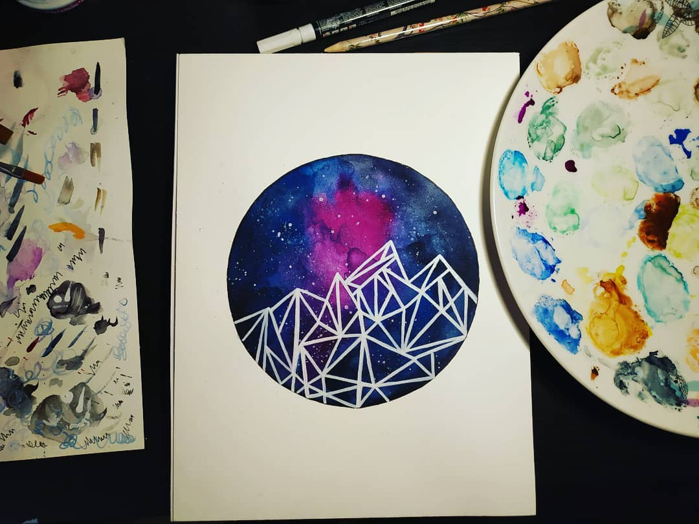
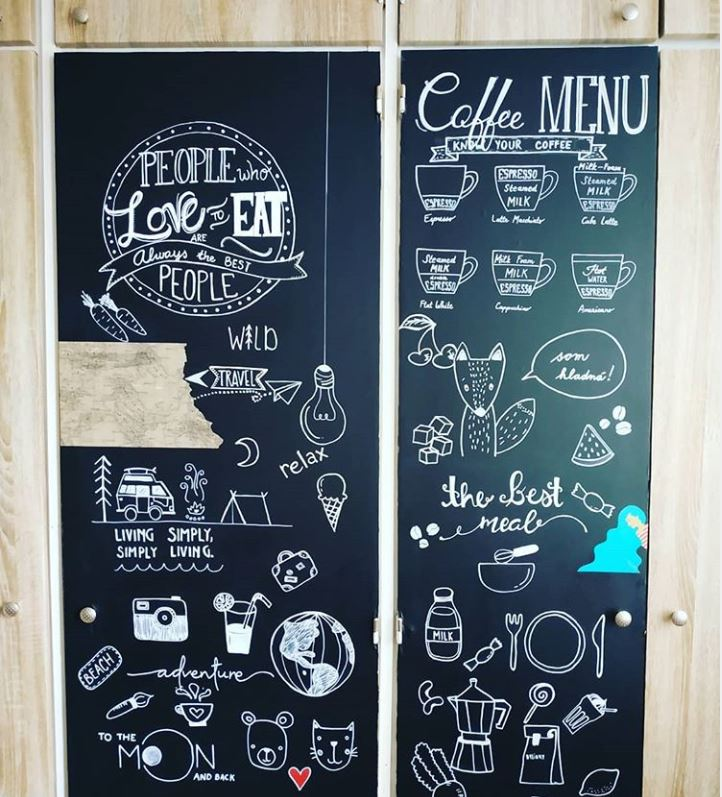
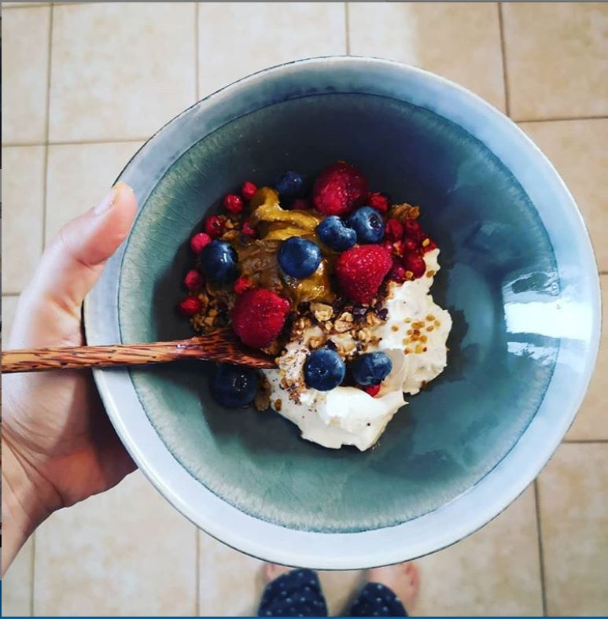

Katarína Krajčovičová
Všeobecné informácie
Volám sa Katarína a som zo Slovenska. Na Slovensku ale nežijem už 9 kokov. Vyštudovala som marketing v Trnave. Po ukončení vysokej školy som sa presťahovala do Berlína, kde som žila viac ako 3 roky. Postupne som sa viac a viac začala zaujímať o weby a nakoniec som som sa marketingu prestala venovať úplne. V Prahe som pracovala najprv ako web content editor, neskôr na supporte v IT spoločnosti a momentálne ako project manager v malej IT fimre.
Záľuby
Mám rada všetko kreatívne. Venujem sa vo voľnom čase veľa kreatívnym technikám a neustále ich
striedam. Začalo to, keď mi ako malej podaroval otec svoje korálky. Odvtedy prešlo veľa rokov a ja
som sa venovala reštaurovaniu nábytku, výrobe šperkov, tkaniu, maľovaniu akvarelov, krasopísmu...
Pár ukážok prikladám v prehľadovej galérii.
Ak už hovoríme o záľubách, chcela by som vyzdvihnúť moju záľubu v príprave raňajok. Milujujem farby
a ovocie a raňajky sú pre mňa najobľubenejšie jedlo dňa :-)
Galéria akvarelov

Základné informácie



Raňajky

Záver
Na záver by som chcela napísať, že som veľmi rada, že som dostala príležitosť navštevovať tento kurz. Určite všetky nadobudnuté poznatky využijem vo svojej práci, ale aj voľnom čase. Do bdúcnosti by som chcela svoje znalosti ešte viac zdokonalovať a venovať sa tvore webov.